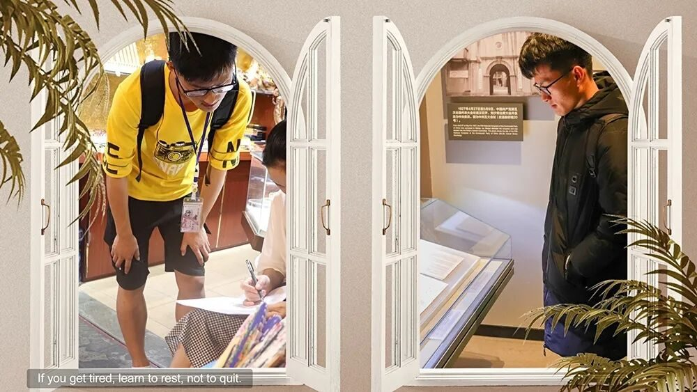
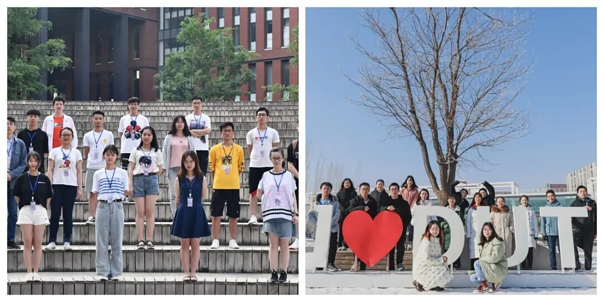
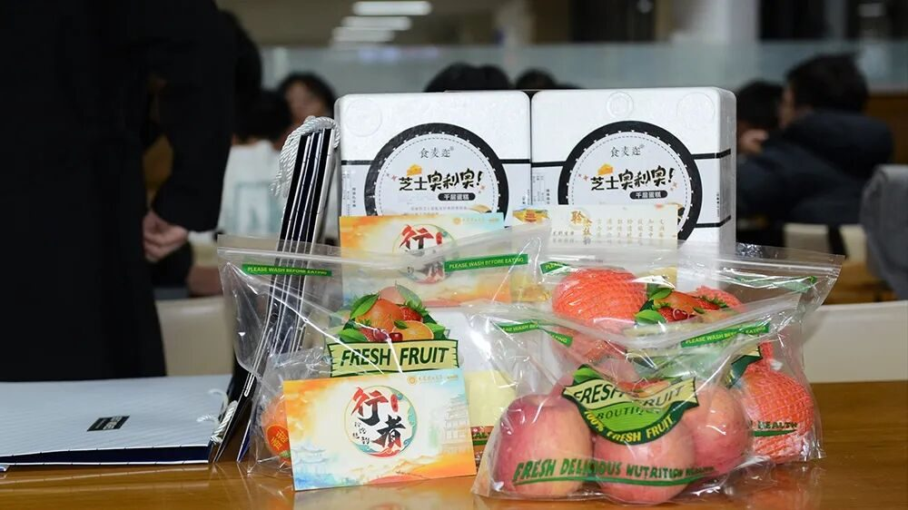
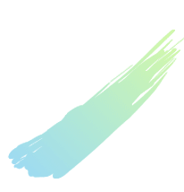
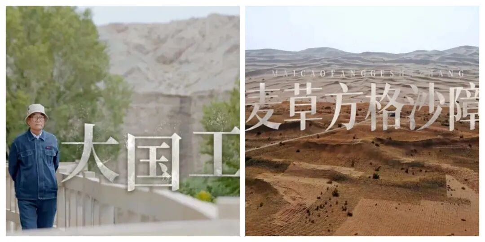

【煌然成篇·一】始于行者，不止于疆

依稀记得刚刚进入行者无疆时组长说的那句话，“如果可以的话，我希望行者无疆是我大学的一门必修课”，行者无疆聆谂丝韵已经是我的第三次文化调研了，这三期让我印象越来越深刻的苦旅，贯穿了我的大学时光，在我的人生路上留下了深刻的印记。

想想最初加入行者无疆的时候，我还是一个懵懂无知的大学新生，是行者无疆这个团队带我走近未知的世界，见识到了重庆的酷热，长沙的水乡，如果说没有加入到行者无疆这个大家庭，很难想象我在大学里还能有这样的机会做我想都不敢想的事。在三期的奇妙旅程中，我学到了很多在校园里学不到的知识与经验，怎么培养一颗责任心，怎么表达一个好的idea、怎样运营好一个团队等等，行者无疆对于我来说，不仅仅是一个有爱的团体，还是我的导师。


即使是从宣传组组员，到宣传组组长，看似在团队里已经是元老级别的存在，但是我仍然不认为我有能力、有资格能胜任第八期行者无疆的队长，因为经营好这样一个优秀的团队，不是在团队里从事的时间够多就可以的，还需要有足够的号召能力，优秀的组织能力等等，我个人觉得有很多方面我所具备的还远远不够，但是行者无疆教会过我，要做一个敢想同时也敢做的人。
第八期行者无疆从队员招募，再到行前的准备，再到实践中，都遭遇到了大大小小的麻烦。由于疫情的原因，前往敦煌的实践旅程充满了不确定性，我们能不就能去是最大的难题，即使这是一个有足够吸引力的文化苦旅，但是在特殊时期就要有承担特殊时期的冲击，这是行者无疆的责任，也是我的责任。

得知我们最终不得不在线上开展文化调研时，一时间我有点不知所措，在前期我储备的想法可能都实现不了了，而新的调研形式是行者无疆从来都没有遇到过的，纯线上的调研之旅该如何做到有意义，该如何让团队里的成员感受到丝路文化的文化韵味。这一个个难题需要解决，好在随着时间的推移，我们逐渐找到了思路，通过有计划的观看纪录片来了解敦煌当地的文化发展，通过网络虚拟展馆直观的感受文化的现存情况，同时我们有幸邀请到了敦煌博物馆的荣主任和吴先生，为我们系统的解答了队员心中的疑问。

这段文化旅程虽然在线上与行者们完成，虽然还有很多不尽如人意的地方，还有很多没能实现的想法，但是因地制宜从来都不会简单，改变文化调研的方式也从来不是想想就可以完成的，从无到有也绝不是空谈。虽然这可能是行者无疆遇到意外的一期，但相信在未来团队是需要转型或者改变调研方式的，但是不管怎么样，行者无疆的前途一定是光明的，因为有一颗颗炙热的心在那。就像以前我们觉得自己不行，现在行了一样。

感谢和我一起探索文化的清雅、丰元、薛政、亚男、至鸿、南云、天禹、米鑫、欣怡、兆琪、婧霖、小玉、付媛、孙健。希望你们始于行者，不止于疆。
来源 | 行者无疆实践团
文字 | 康艳虎
排版 | 张清雅
审核 | 康艳虎 张清雅
行者无疆实践团
QQ：2758025831

随行者一起认识世界
长按二维码